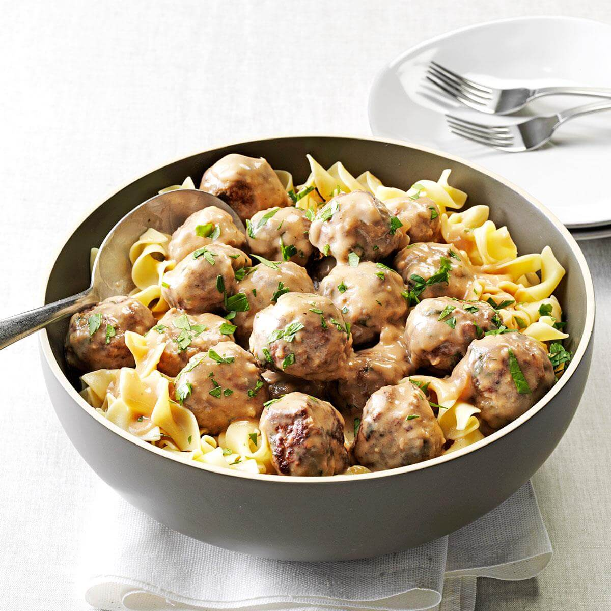

Mom’s Swedish Meatballs

Mom fixed this Swedish meatball recipe for all sorts of family dinners, potluck suppers and PTA meetings. The scent of browning meat is intoxicating. Add to that the sweet smell of onions caramelizing, and everyone’s mouth starts watering.
Prep time=30 mins || Cook time=40 mins || Total time=1 hr 20 mins
Ingredients
3/4 cup seasoned bread crumbs
1 medium onion, chopped
2 large eggs, lightly beaten
1/3 cup minced fresh parsley
1 teaspoon coarsely ground pepper
3/4 teaspoon salt
2 pounds ground beef
GRAVY:
1/2 cup all-purpose flour
2-3/4 cups 2% milk
2 cans (10-1/2 ounces each) condensed beef consomme, undiluted
1 tablespoon Worcestershire sauce
1 teaspoon coarsely ground pepper
3/4 teaspoon salt
NOODLES:
1 package (16 ounces) egg noodles
1/4 cup butter, cubed
1/4 cup minced fresh parsley
Directions
In a large bowl, combine the first six ingredients. Add beef; mix lightly but thoroughly. Shape into 1-1/2-in. meatballs (about 36). In a large skillet over medium heat, brown meatballs in batches. Using a slotted spoon, remove to paper towels to drain, reserving drippings in pan.
For gravy, stir flour into drippings; cook over medium-high heat until light brown (do not burn). Gradually whisk in milk until smooth. Stir in the consomme, Worcestershire sauce, pepper and salt. Bring to a boil over medium-high heat; cook and stir for 2 minutes or until thickened.
Reduce heat to medium-low; return meatballs to pan. Cook, uncovered, 15-20 minutes longer or until meatballs are cooked through, stirring occasionally.
Meanwhile, cook noodles according to package directions. Drain; toss with butter. Serve with meatball mixture; sprinkle with parsley.
Nutrition facts
6 meatballs with 1-3/4 cups noodles and about 1/3 cup sauce: 837 calories, 33g fat (14g saturated fat), 256mg cholesterol, 1744mg sodium, 82g carbohydrate (10g sugars, 4g fiber), 50g protein.